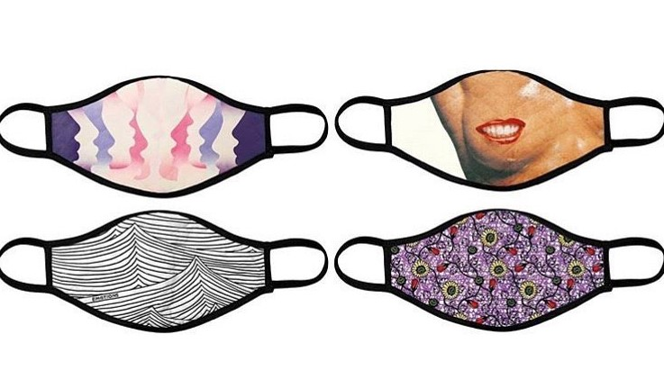

‘코로나19’의 시대가 되면서 미술 작품에 가장 많이 등장하는 소재가 바로 ‘마스크’일 것이다. 최근 그려진 거리의 벽화나 그라피티를 보면 등장인물에 마스크를 덧입히거나 세계 명화의
인물에 마스크를 씌우면서 ‘팬데믹’ 시대에 우리가 행해야 할 행동 지침을 미술의 시각적 환기를 통해 드러내고 있다. 얼마 전에는 ‘얼굴 없는’ 그라피티 작가인 뱅크시가 런던
지하철에서 벌인 마스크를 잘 쓰자는 내용의 그라피티 퍼포먼스를 SNS를 통해 공개하기도 했다.
뱅크시 < Girl with a Pierced Eardrum (given face mask)> 영국 브리스톨
Pony Wave 벽화_미국, 로스앤젤레스
Toyin Ojih Odutola < Routine Inspection_2019> / Rashid Johnson <
Untitled Anxious Red Drawing_2020>
작가는 '현재 이 시기를 돌이켜 볼 때, 사람들이 마주한 깊은 동요와 지속적인 숙고 시간가지면서 어떤 역동적인 예술에 영감을 준 순간으로 볼 것이라고 생각한다'고 말한다.
Adieu Covid19
미디어 아트는 매체 기술을 사용한 예술로서, 이미 우리의 삶 속에 가장 친근하게 다가오는 현대미술의 한 영역이다.
이 영상은 쇼 디자인 그룹 '생동감 크루'의 재능기부로 제작되었다. 코로나-19로 인해 힘들어하는 의료진들을 향한 존경과 감사의 마음, 함께 어려운 시기를 극복하는 국민들을
응원하고 코로나-19 종식을 염원하는 마음을 담았다고 한다.
Pandemic, New challenge
세계 현대미술의 대표 아트페어인 영국 프리즈(Frieze Art Fair)의 새로운 도전
전용 공간을 만들어 세계 전역의 갤러리들이 참여하는 팝업 형태의 아트쇼를 1년 내내 이어가기로 했다. 아트페어사가 전용 공간을 마련해 연중 상시 팝업쇼를 추진하는 것은 이번이
처음이다. 프리즈 런던의 에바 랭렛 예술감독은 “팬데믹이 가져온 변화에 예술계가 대응하려는 당연한 시도”라고 설명했다. 국가 간 이동이 사실상 차단된 상황에서 특정 기간에 각국의
컬렉터와 예술가들을 한자리에 모으는 기존 방식은 지속가능하지 않다고 판단했다는 것이다.“팝업 모델은 물리적·시간적 한계를 극복하고 특정 주제를 보다 깊이 있게 살펴볼 수 있는
방법”이라고 설명했다. ‘넘버9 코크스트리트’는 3개의 공간으로 구성됐다. 갤러리들은 이 공간을 4주간 빌려 아트페어를 열 수 있다. 프리즈 측은 신진 예술가를 집중 조명하는
프로그램에 할인 혜택을 제공하고 SNS 마케팅 등도 지원할 방침이다.
마스크에 대한 인식 변화
미국과 유럽 등 서방 국가에서는 테러나 과격시위 때문에 '복면금지법'이 존재할 만큼 얼굴을 가리는 것에 거부감을 가진다.
특히, 마스크는 아픈 사람이 외출 시에 전염을 피하기 위해 불가피하게 사용한다는 게 일반적인 인식인 데다 마스크 착용 효과에 대해서도 부정적이었다.

마스크에 대한 부정적인 인식 변화를 주기 위해서 프리즈는 아티스트 이드리스 칸이 디자인한 한정판 안면 마스크를 판매하며, 수입금을 새롭게 부상하는 큐레이터들을 지원하였다.

_영국 브리스톨.png)